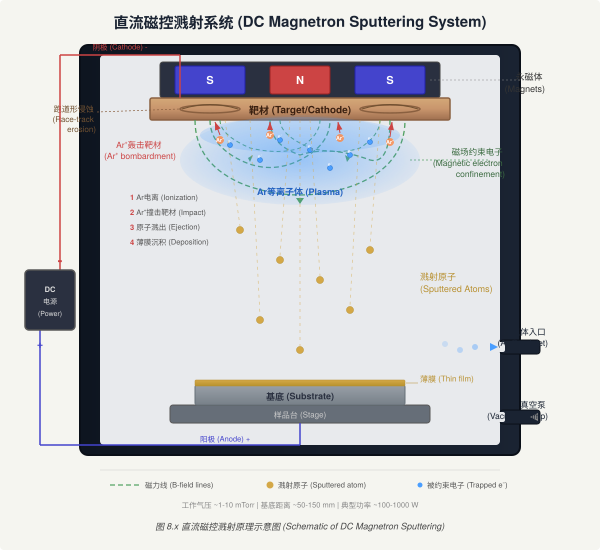
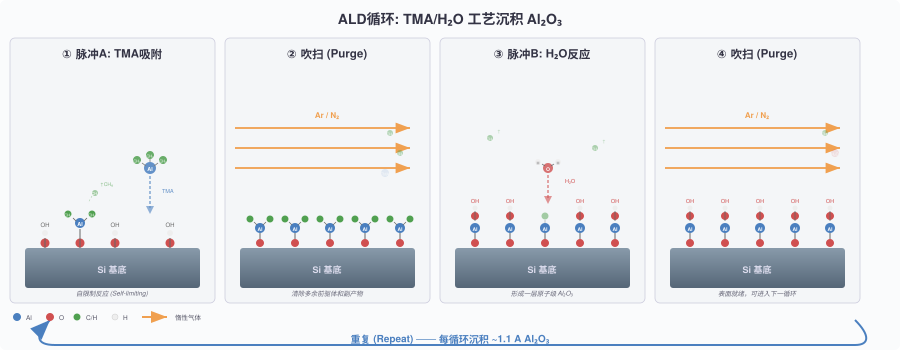
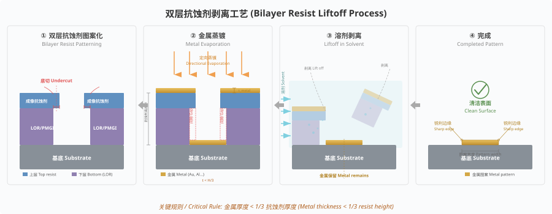

并非所有材料都可以通过刻蚀进行图形转移。金属在反应离子刻蚀中尤其困难，因为许多金属与卤素气体的反应产物挥发性不足。湿法酸蚀虽可刻蚀金属，但各向同性本质限制了分辨率。因此，许多纳米制造场景必须采用增材工艺（Additive Process），即通过光刻胶图形开口沉积材料，实现图形转移。
增材图形转移有两条主要路径。剥离（Liftoff）先在图形化光刻胶上沉积薄膜，再溶解光刻胶将其上方的薄膜一并带走，留下衬底上的金属图形。电镀（Electroplating）以光刻胶图形为模具，在种子层上电化学沉积金属填充模具空间。两种工艺对薄膜沉积技术的要求截然不同：剥离需要良好的方向性和差的台阶覆盖率；电镀需要导电种子层和均匀的电流密度分布。
热蒸发（Thermal Evaporation）将源材料加热至产生足够蒸气压（至少 10 mTorr），原子在高真空中沿直线飞行沉积到衬底上。简单电阻加热系统使用加热丝或坩埚升温；电子束蒸发利用 270° 偏转磁场将高能电子束打在源材料上，可处理高熔点难熔金属（W、Mo、Ta 等）。石英晶体监测仪实时测量沉积速率，其谐振频率随沉积质量变化而偏移，配合机械快门可精确控制膜厚。
沉积速率遵循 Knudsen 余弦定律：
$$R \propto (\cos \theta \cdot \cos \phi / r^2) \cdot (P_s(T) - P_c)$$
其中 $r$ 为源到样品距离，$\theta$ 和 $\phi$ 分别为蒸发源轴向角和样品表面法线角，$P_s(T)$ 为源材料蒸气压。平面样品上不同位置的膜厚随偏离轴心距离增大而减薄。将样品置于球面（Planetary）上可实现均匀沉积，此时沉积速率仅取决于球面半径 $r_0$：$$R \propto (P_e - P_c) / 4r_0^2$$
热蒸发的核心优势是方向性好、台阶覆盖率差，最适合剥离工艺。衬底温度保持 50-100°C，不损伤光刻胶图形。劣势包括：膜质量较差（低密度、大晶粒）；合金沉积困难（各组分蒸气压差异导致成分偏离化学计量比）；台阶覆盖能力不足，纵横比超过 1:1 的结构无法形成连续膜。
等离子体溅射沉积（Plasma Sputtering）通过 Ar⁺ 离子轰击靶材，将靶原子溅射出来沉积到样品上。溅射的主要优势是可沉积几乎任何材料（包括高熔点金属和合金），且膜附着力优于蒸发膜。

三种主要溅射方式：
| 溅射类型 | 功率源 | 适用材料 | 特点 |
|---|---|---|---|
| DC 溅射 | 直流高压（数千伏） | 导电金属 | 速率低，不能溅射绝缘体 |
| RF 溅射 | 13.56 MHz 射频 | 金属和介电体 | 消除充电和电弧问题 |
| 磁控溅射 | DC 或 RF + 横向磁场 | 金属和介电体 | 磁场约束电子，等离子体密度高，速率最快 |
溅射原子从靶材飞出后频繁与腔室中气体原子碰撞散射，运动方向近似各向同性，导致方向性远逊于蒸发。然而溅射沉积合金膜时具有独特优势：不同组分虽然溅射产额有差异，但靶表面高产额组分先被耗竭后达到平衡，最终整体沉积成分与靶材一致。
为改善方向性以适应剥离工艺，发展了两种技术。远距离溅射（Long-Throw Sputtering）增大靶到样品距离并降低压力。维持等离子体需满足 L·P > 0.5（cm·Torr），增大间距 L 可降低压力 P。在磁控系统中，25 cm 的投掷距离配合低至 0.1 mTorr 的工作压力，原子平均自由程 λ ≈ 5×10⁻³/P(Torr) cm 远超投掷距离，过滤掉大角度原子。准直溅射（Collimated Sputtering）在靶与样品之间插入管束阵列，选择性拦截非法线方向原子。准直管纵横比每增加 1 个单位，沉积速率下降约 35%，且管壁沉积物积累导致堵塞，需频繁更换。
| 技术 | 衬底温度 | 沉积速率 | 方向性 | 台阶覆盖 | 膜密度 | 晶粒尺寸 |
|---|---|---|---|---|---|---|
| 电阻加热蒸发 | 50-100°C | 1-20 Å/s | 好 | 差 | 差 | 10-100 nm |
| 电子束蒸发 | 50-100°C | 10-100 Å/s | 好 | 差 | 差 | ~10 nm |
| 等离子体溅射 | ~200°C | ~100 Å/s（金属） | 中等 | 好 | 好 | 10-100 nm |
| PECVD | 200-300°C | 1-10 Å/s（介电体） | 中等 | 很好 | 很好 | 1-10 nm |
| LPCVD | 600-1200°C | 10-100 Å/s | 差 | 优秀 | 优秀 | <1 nm |
| ALD | 25-300°C | ~1 Å/cycle | 极差 | 优秀 | 优秀 | <1 nm |
化学气相沉积（Chemical Vapor Deposition, CVD）利用前驱体气体在衬底表面发生化学反应，生成固态薄膜。与 PVD 纯物理过程不同，CVD 涉及复杂的气相传输和表面化学反应。反应物从主气流中扩散穿过停滞边界层（Boundary Layer）到达衬底表面，在表面吸附、分解、反应后生成薄膜，副产物脱附返回气相。
CVD 反应速率受两种机制限制。在低温区，表面化学反应缓慢，沉积速率随温度呈 Arrhenius 指数增长，称为反应速率限制（Reaction Rate Limited）。此区间对温度均匀性要求极高，适合大批量热壁炉管式反应器（如 LPCVD），气流动力学的影响较小。在高温区，化学反应迅速完成，沉积速率取决于反应物穿过边界层的扩散速率，称为质量传输限制（Mass Transport Limited）。边界层厚度 δ 随距入口位置 z 增大：δ ≈ 5·(νz/U∞)^(1/2)，其中 ν 为运动学粘度，U∞ 为主流速度。反应器常采用楔形基座使衬底倾斜以补偿边界层增长，保证膜厚均匀性。此区间对气流控制和腔室几何设计要求严格，适合单片式冷壁反应器。
graph TD
A[温度升高] --> B{沉积速率限制机制}
B -->|低温区| C["反应速率限制
速率 ∝ exp(−Ea/kT)"]
B -->|高温区| D["质量传输限制
速率 ∝ T^1.5/P"]
C --> E[温度均匀性关键
热壁批量炉管]
D --> F[气流均匀性关键
冷壁单片反应器]
style C fill:#e8f4f8
style D fill:#fde8e8层流条件下（Reynolds 数 NRe < 2300），气体流速在管壁处为零，中心最大，形成抛物线分布。气体从均匀入口速度（Plug Flow）过渡到完全发展的管内流需要 zv ≈ a·N_Re/25 的距离。当温度不均匀时，热衬底附近的气体膨胀产生自然对流，在反应器内形成横向滚动涡胞（Roll Cell），尤其在高压和重分子气氛中显著。降低压力可有效抑制自然对流。
LPCVD（Low Pressure CVD）工作压力 0.1-1 Torr，温度 600-1200°C。低压使气相扩散系数增大，边界层效应减弱，工艺转为反应速率限制，膜厚均匀性优异。标准 LPCVD 工艺包括 SiO₂（TEOS 源，700°C）、Si₃N₄（SiH₂Cl₂/NH₃，800°C）和多晶硅（SiH₄，625°C）。LPCVD 膜的密度和化学组成接近热生长层，台阶覆盖优秀，但高温不兼容聚合物光刻胶掩模，只能在光刻前完成沉积。
PECVD（Plasma Enhanced CVD）利用等离子体提供额外能量促进前驱体分解，衬底温度降至 200-300°C。PECVD SiO₂ 和 SiNₓ 广泛用作钝化层和层间介电层。劣势是膜中残余氢含量较高，密度低于 LPCVD 膜。PECVD 氧化物在稀 HF 中的刻蚀速率常为热氧化物的 10 倍，可通过高温退火致密化改善。
MOCVD（Metal-Organic CVD）使用有机金属前驱体在较低温度下沉积化合物半导体外延层。三甲基镓（TMGa）与砷烷（AsH₃）反应生成 GaAs，三甲基铟（TMIn）与磷烷（PH₃）生成 InP。MOCVD 可精确控制 III-V 和 II-VI 族化合物半导体的组分、掺杂和厚度，是 LED、激光器和光探测器的关键制造技术。
原子层沉积（Atomic Layer Deposition, ALD）通过自限制表面化学反应逐原子层生长薄膜。每个周期包含四步：（1）引入前驱体 A，在表面形成饱和单层吸附；（2）惰性气体吹扫清除多余前驱体和副产物；（3）引入前驱体 B，与已吸附的 A 层反应生成目标材料的单原子层；（4）再次吹扫。由于每步均为自限制反应，沉积速率恒定约 1 Å/cycle，与前驱体暴露时间和供给量无关。

ALD 的核心优势是极致的保形性（Conformality）：在纵横比超过 100:1 的沟槽和通孔中仍实现完全均匀覆盖。典型 ALD 工艺包括 Al₂O₃（TMA/H₂O）、HfO₂（HfCl₄/H₂O）和 TiN（TiCl₄/NH₃）。对于 3D 堆叠 IC 中深度超过 100 μm、纵横比 >20:1 的硅通孔（TSV），ALD 是唯一可靠的种子层沉积技术。衬底温度范围宽泛（25-300°C），兼容聚合物衬底和温度敏感器件。劣势是沉积速率极低，不适合厚膜制备。
外延（Epitaxy）是在单晶衬底上生长晶格匹配或近匹配的单晶薄膜。
气相外延（Vapor Phase Epitaxy, VPE）：硅外延常用 SiHCl₃ 或 SiH₂Cl₂ 在 1000-1200°C 下与 H₂ 载气反应。通过精确控制温度和气体组分，可实现掺杂浓度突变界面。选择性外延生长（Selective Epitaxial Growth, SEG）仅在暴露的硅窗口上沉积，氧化物或氮化物覆盖区不生长。
分子束外延（Molecular Beam Epitaxy, MBE）：在超高真空（<10⁻¹⁰ Torr）中从多个独立蒸发源向衬底表面投射原子束。生长速率约 1 μm/h，配合反射式高能电子衍射（RHEED）原位监测实现单原子层精度的实时反馈。MBE 可生长 GaAs/AlGaAs 超晶格，每层厚度精确至 0.28 nm（一个单胞）。这种超晶格经解理和选择性刻蚀可制备 6 nm 半间距光栅，用作纳米压印模具。
剥离工艺的概念提出于 40 多年前，当时已实现亚 20 nm 金属线条。目前剥离已成为金属薄膜图形化的首选技术，因为许多金属材料除剥离外无其他可行的图形化手段。分辨率上限取决于光刻工艺本身和沉积膜晶粒尺寸。晶粒尺寸与线宽可比时金属线可能断裂，高沉积速率（无论蒸发或溅射）通常产生较小晶粒。亚 10 nm 的剥离图形已有报道。

成功剥离的两个条件：（1）沉积膜厚度不超过光刻胶厚度的三分之一，以保证膜的不连续性；（2）沉积膜在光刻胶图形侧壁处断开。第二个条件要求沉积具有良好方向性（差的台阶覆盖）。蒸发膜因高方向性可直接满足；溅射膜的台阶覆盖较好，必须在光刻胶中制造底切（Undercut）轮廓以保证膜的断开。
graph LR
A[双层胶涂覆] --> B[电子束曝光]
B --> C[显影形成底切]
C --> D[金属蒸发沉积]
D --> E[溶剂溶解底层胶]
E --> F[金属图形留在衬底]
style C fill:#e8f4f8
style D fill:#fde8e8常用正性剥离的双层胶体系：
PMMA/P(MMA-MAA) 体系：高分子量 PMMA 为上层（低灵敏度），低分子量共聚物 P(MMA-MAA) 为下层（高灵敏度）。相同剂量下底层显影更快，自然形成底切轮廓。
PMMA/LOR 体系：PMMA 为成像层，LOR（基于 PMGI 聚合物的专用剥离胶）为底层。LOR 在专用溶剂中独立溶解，底切长度仅由溶解时间控制。PMMA/Al 双层体系也有报道：铝中间层在碱性溶液中溶解产生底切，同时为绝缘衬底上的电子束光刻提供导电层消除充电效应，在石英衬底上制备了 40 nm 线宽银图形。
大面积金属覆盖需要负性光刻胶以避免大面积曝光的长时间写入。负性胶天然产生正切轮廓，不利于剥离。HSQ/PMMA 双层胶体系解决了这一问题：HSQ 为上层负性成像层，PMMA 为底层。HSQ 曝光显影后不影响 PMMA（因使用不同显影液），作为掩模用 O₂ 等离子体刻蚀 PMMA 底层，通过控制刻蚀参数独立调节底切尺寸。该工艺已制备 50 nm 间隙的铬金属图形和 100 nm 直径的铬薄膜单孔。
电镀（Electroplating）可制造剥离工艺无法实现的高纵横比金属结构。原因有二：剥离要求膜厚不超过胶厚的三分之一，且沉积材料在窄深结构顶部的悬挂效应（Overhang）会封闭开口。电镀工艺在衬底上沉积导电种子层，旋涂光刻胶并图形化形成模具，在模具内电化学沉积金属填充。可电镀 Cu、Ni、Au、NiFe（坡莫合金）等多种金属和合金。
LIGA 技术（德语 Lithographie-Galvanoformung-Abformung 的缩写，即光刻-电铸-注塑）以硬 X 射线曝光超厚聚合物胶形成高纵横比模具，再电镀镍填充。紫外 LIGA 以厚光刻胶替代 X 射线光刻，成本更低但纵横比稍逊。磁性 MEMS 器件广泛使用坡莫合金电镀，因为磁力与磁性材料体积成正比，电镀是构建大体积磁性微结构的有效途径。
亚 100 nm 尺度电镀的主要应用是 X 射线掩模吸收体和微波带片（Micro Zone Plate, MZP）的制造。MZP 的成像分辨率仅取决于最外环宽度 ΔrMZP，表达式为 R_x = 2k₁·ΔrMZP。最外环宽 25 nm 的金电镀波带片已实现。15 nm 宽度时因金的多晶粒尺寸效应（金沿 ⟨111⟩ 方向电镀更快），部分线条出现可见断裂。电镀均匀性取决于电流密度分布：基底边缘和图形尖角处电流密度偏高，导致边缘镀厚、孤立窄线比密集线更厚。
大马士革（Damascene）工艺是 IC 铜互连的核心技术。铝可被 RIE 直接刻蚀进行单大马士革图形化，但铜的干法刻蚀极为困难。双大马士革（Dual Damascene）工艺在一次金属沉积中同时形成通孔和金属线：先在层间介电层（通常 SiO₂）中刻蚀通孔和沟槽，沉积扩散阻挡层，溅射超薄 Cu 种子层，电镀 Cu 填充全部结构，最后化学机械抛光（CMP）去除多余铜。3D 堆叠 IC 的硅通孔（TSV）深度 10-100 μm，纵横比 >20:1，需先用 DRIE 刻蚀，再用 ALD 沉积种子层，最后电镀或 CVD 填充 Cu 或 W。
模板掩模（Stencil Mask）是一种无光刻胶的增材图形转移方法。悬浮薄膜上的刻穿图案充当影子掩模，蒸发源原子穿过开口沉积到衬底上。仅热蒸发具有足够方向性适合此技术。1999 年首次报道纳米级模板掩模图形转移，使用 Si₃N₄ 悬浮膜上 5-10 nm 的孔制备了 15 nm 金属点。后续发展至大面积图形化，同一掩模上亚 100 nm 特征和超过 100 μm 特征可同时形成。
模板掩模的优势包括：非接触式沉积、可在拓扑表面和功能化表面操作、单步成形无光刻胶污染、无邻近效应（光学衍射或电子散射均不影响）。主要限制为：重复使用导致孔径堵塞；掩模与衬底间隙产生的角度模糊（Halo）；热辐射引起的掩模膨胀和应力变形；以及制备掩模本身需要光刻和 RIE，限制了最小特征尺寸（大面积掩模约 100 nm，小面积可用 FIB 加工更细孔径）。
热蒸发方向性好、衬底温度低，最适合剥离工艺；溅射可沉积高熔点材料和合金，但方向性差需底切辅助剥离。
低温区为反应速率限制（Arrhenius指数增长），适合热壁批量炉管；高温区为质量传输限制，适合冷壁单片反应器。
自限制表面反应实现原子层精度，保形性极佳（纵横比>100:1仍均匀覆盖），是TSV种子层沉积的唯一可靠技术。
膜厚不超过胶厚1/3，沉积膜在侧壁处断开。双层胶体系（PMMA/LOR等）通过底切轮廓解决方向性不足的剥离难题。